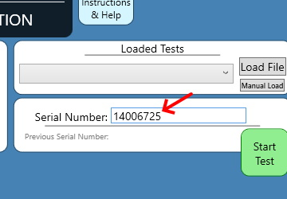
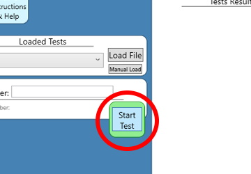
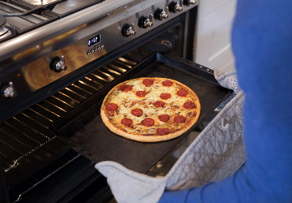

Here are the instructions for calibrating a sensor. First scan the Serial Code and look to make sure the number has been loaded by the Tester:
Then firmly fit the sensor as such:
Click the start button and wait until the test results section fills out.
Once the tests results end with a final line reading "CALIBRATION PASSED", remove the sensor.
The counter should show one more sensor passed. Next add a sticker to the bakc with your initials and the date. Put the sensor in a red bin with a sheet labeling the batch as "Awaiting Audit".
Use any rollers ahead of time as a base for the sensor bin incase it gets heavy.